백제 비밀 탐험대
나만의 탐험대원 카드를 만들어주세요!
한 번 만들면 다음에 이름과 학교만 넣으면 이어서 탐험할 수 있어요.
👑 백제 비밀 탐험록
준비된 탐험대원, 출발합니다!
🗺️ 제1막: 한강의 황금 나라
옛날 옛적, 우리나라에는 고구려·백제·신라 세 나라가 사이좋게… 아니, 가끔은 으르렁거리며 살았어요. 이것을 삼국시대라고 불러요.
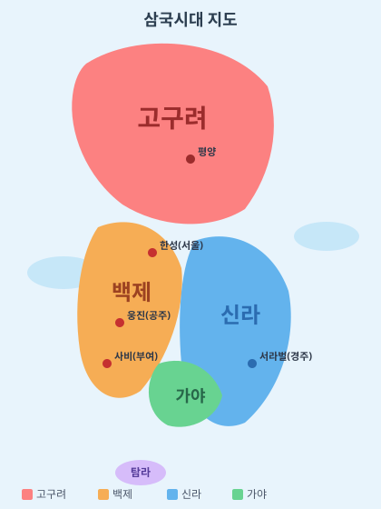
고구려(위)·백제(왼쪽)·신라(오른쪽). 한성·웅진·사비는 백제가 옮긴 수도예요.
백제는 지금 서울, 한강 근처에서 나라를 세웠어요. 한강은 물이 깊고 넓어서 커다란 배가 둥둥 떠다니며 장사하기 딱 좋았답니다.

오늘날의 한강. 1,500년 전에도 백제 배들이 이 강을 오갔어요.
🏰 첫 수도, 위례성을 찾아라!
백제의 첫 수도는 위례성(한성)이에요. 흙을 겹겹이 다져 쌓은 거대한 성벽이 한강을 지키듯 서 있었죠.

서울 송파구 풍납토성. 백제의 첫 왕성(하남 위례성)으로 여겨져요.
성벽은 원래 둘레가 약 3.5km나 되는 한반도 최대급 흙성이었어요. 진흙과 모래를 번갈아 다지는 판축 기술로 쌓았답니다. 옆동네 몽촌토성은 언덕을 이용해 만든 남성(南城)이에요.

올림픽공원 안의 몽촌토성. 산책로가 옛 성벽을 따라가요.
풍납토성 안에서는 왕궁 건물 자리, 우물, 도로, 중국에서 온 귀한 그릇까지 나왔어요. “여기가 정말 백제의 궁궐이었구나!” 하고 학자들이 깜짝 놀랐답니다.
📺 KBS 역사스페셜 - 잃어버린 왕국, 백제의 풍납토성 (▶ 누르면 재생)
⛵ 바다 너머 친구들, 칠지도
백제 사람들은 튼튼한 배를 타고 중국과 일본까지 오가며 도자기·철기·비단을 팔았어요. 그래서 백제는 “문화를 나눠 주는 나라”로 유명했답니다.

나뭇가지가 7개 달린 칼, 칠지도. 일본 왕에게 선물한 우정의 증표예요.
이웃 나라 일본 왕에게는 “우리 평화롭게 지내자!”라며 칠지도를 선물할 정도로 백제는 크고 강한 나라였어요.
🌙 캄캄한 밤의 탈출
그런데 백제가 평화롭게 살던 어느 날, 북쪽의 힘센 나라 고구려의 장수왕이 철갑옷을 입은 군사 3만 명을 이끌고 쳐들어왔어요.

고구려 고분 벽화. 말 타고 활 쏘는 모습이 생생해요.

장수왕의 무덤으로 전해지는 장군총 (중국 지안). 돌로 쌓은 피라미드처럼 보여요.
"와아아!" 고구려 군대의 함성에 한성(서울)은 불길에 휩싸였어요. 백제 사람들은 캄캄한 밤을 틈타 짐을 싸서 남쪽으로 피난을 떠났죠. 며칠 밤낮을 걸어 산과 강이 병풍처럼 막아 주는 곳, 공주(웅진)에 새 집을 마련했답니다.
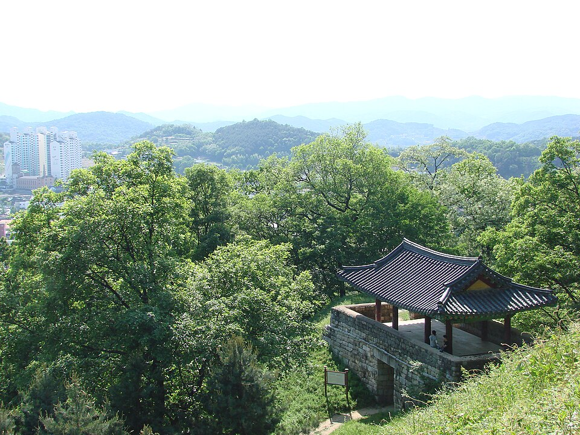
피난처가 된 공주 공산성. 금강이 자연 해자(물로 된 도랑) 역할을 했어요.
한성(서울) → 475년 고구려의 공격 → 웅진(공주)으로 급히 이사! 다음 막에서 영웅 왕이 등장해요.
👑 제2막: 영웅과 황금빛 도시
금강이 감싼 요새 도시, 공주 공산성
산속 공주로 이사 온 백제 사람들은 고구려가 또 올까 봐 마음을 졸였어요. 그때 슈퍼히어로 같은 왕이 나타났어요. 바로 무령왕이에요!
무령왕은 굶주린 백성에게 농사짓는 법을 가르치고, 제방을 쌓아 홍수를 막았어요. 고구려가 쳐들어오자 직접 칼을 들고 적을 물리쳤죠. 521년에는 중국에 “백제가 다시 강국이 되었다(갱위강국)”고 자신 있게 알렸답니다.
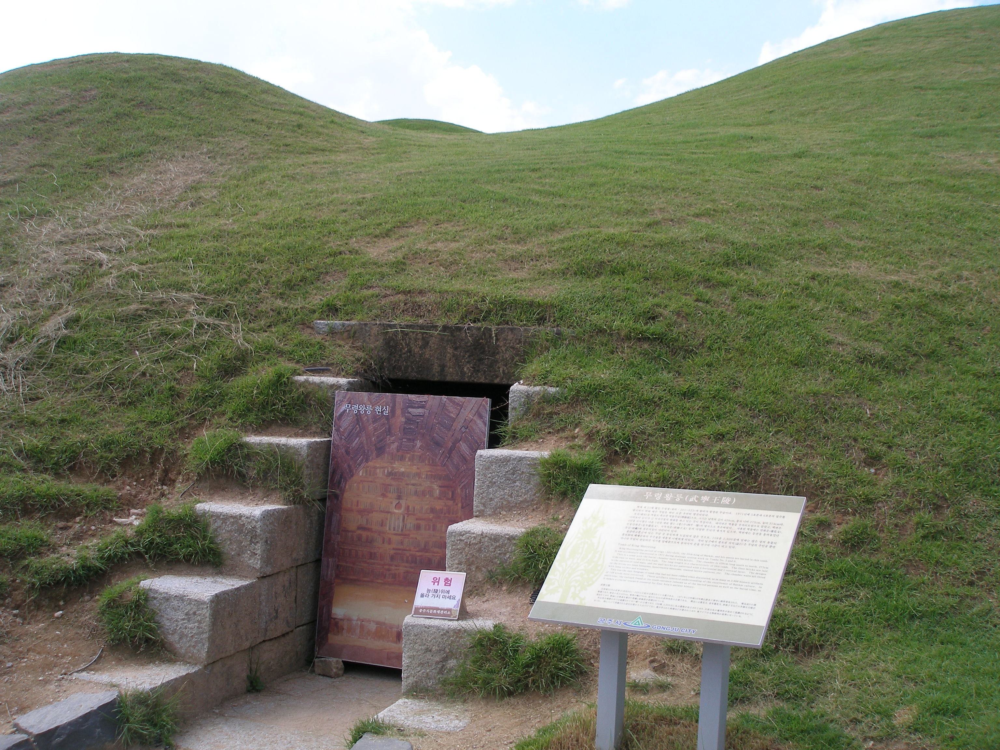
도둑이 한 번도 들어가지 못한 기적의 무덤, 무령왕릉

무덤 문을 지키던 돌짐승 진묘수. 뿔이 나고 입술이 빨개요!

하늘에서 본 공산성. 산능선을 따라 성이 구불구불 이어져요.

서쪽 문 금서루. 청룡·백호·주작·현무 깃발이 펄럭이는 곳이에요.
💎 1,500년 만의 타임캡슐
1971년 장마에 대비해 배수로를 파다가, 연꽃무늬 벽돌 틈으로 무덤 문이 열렸어요. 안에는 왕과 왕비의 이름·돌아가신 날이 적힌 돌판(지석)과 황금 관장식이 그대로 있었어요.

왕과 왕비의 이름이 적힌 돌판, 지석
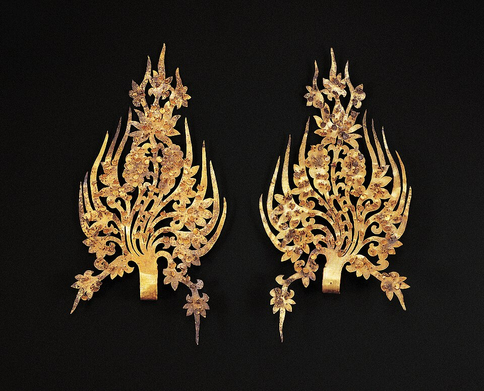
불꽃처럼 화려한 무령왕의 금제 관장식 (국보)

무덤 벽을 쌓은 연꽃무늬 벽돌(전돌). 산·구름·도깨비 무늬도 있어요.
📺 무령왕릉을 지키던 진묘수 (▶ 누르면 재생)
무령왕의 관은 일본에서 나는 나무(금송)로 만들었어요. 벽돌 무덤 양식은 중국 양나라와 닮았죠. 백제가 바다 건너 친구들과 얼마나 친했는지 보여주는 증거예요.
📺 KBS - 1,400년 동안 감춰져 있던 무령왕릉이 열린 날 (▶ 누르면 재생)
🌾 더 넓은 들판, 부여(사비)로!
무령왕의 아들 성왕은 생각했어요. “산골짜기는 지키기엔 좋지만, 넓은 나라를 만들려면 들판과 강이 필요해!”
그래서 두 번째 이사를 했어요. 바로 부여(사비)예요. 금강(백마강)을 따라 배가 다니고, 넓은 땅에서 쌀도 많이 자랐답니다. 오늘 우리가 탈 황포돛배가 바로 그 강을 다녀요!

사비의 강, 백마강을 오가는 황포돛배
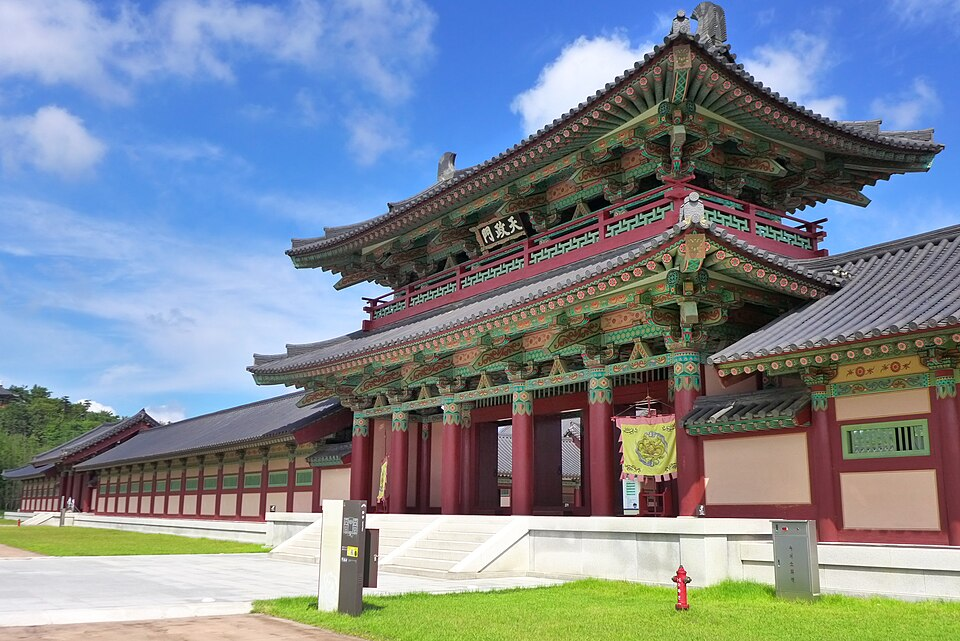
사라진 사비궁을 재현한 백제문화단지의 모습
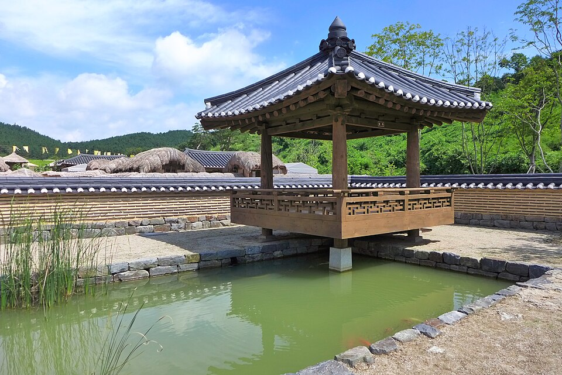
멀리서 본 백제문화단지. 궁궐과 탑이 한눈에 보여요.

부여 한가운데 서 있는 정림사지 5층 석탑. 사비 도성의 중심이었어요.
.jpg?width=960)
사비의 보물을 모아 둔 국립부여박물관
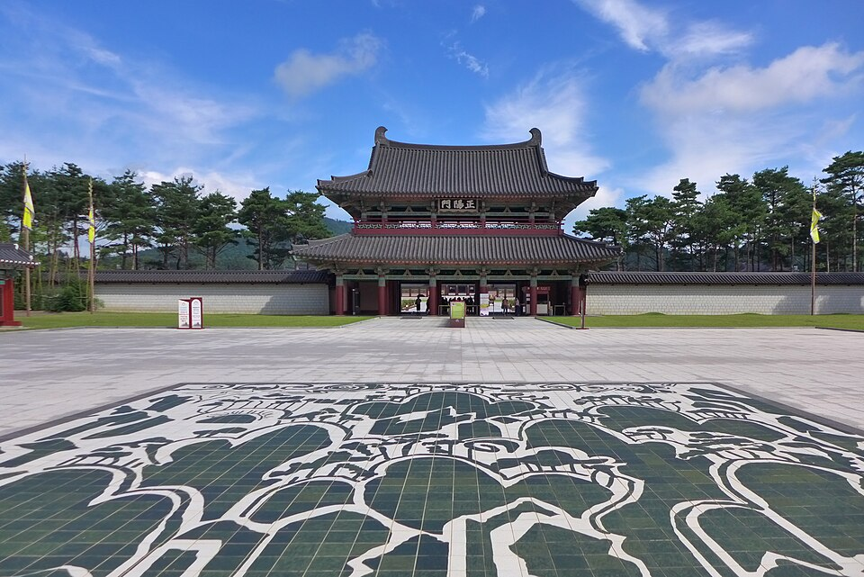
왕이 정사를 보던 사비궁. 가장 큰 전각 안에 어좌가 있어요.
① 한성(서울, 위례성) → ② 웅진(공주) → ③ 사비(부여). 백제는 수도를 세 번 옮긴 나라예요!
😊 백제의 미소, 예술의 꽃
사비에 도착한 백제 사람들은 화려한 궁궐과 절을 짓고, 세상에서 가장 따뜻한 미소를 지닌 불상을 만들었어요. 사람들이 “백제의 미소”라고 부르는 이유죠.
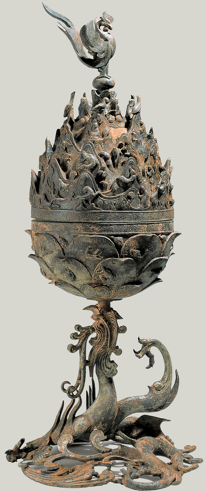
국보 백제금동대향로. 봉황·용·음악가·동물 39마리가 숨어 있어요.
1993년 겨울, 부여에서 주차장을 만들려다 진흙 속에서 향로가 기적처럼 나왔어요. 산소가 안 통하는 진흙이 1,500년 동안 이불처럼 덮어 준 덕분이에요.

사람들이 “백제의 미소”라고 부르는 서산 마애삼존불
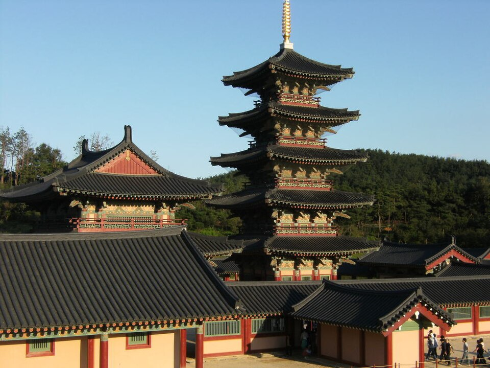
아파트 13층 높이(38m)의 능사 5층 목탑 재현
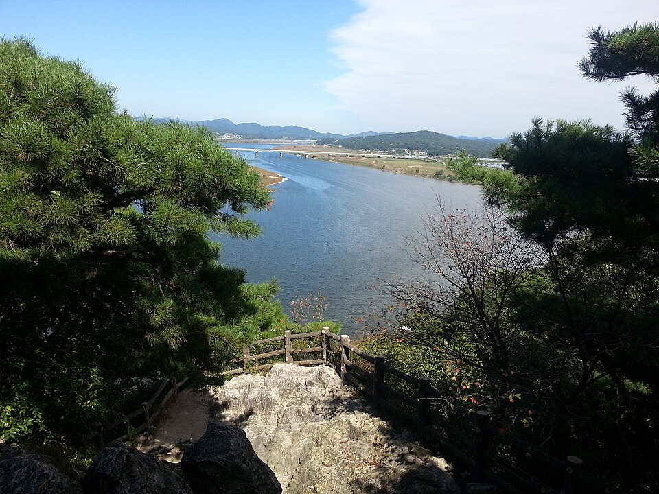
사비를 감싸 안은 백마강과 낙화암
📺 백제금동대향로를 가까이에서 살펴보는 영상 (▶ 누르면 재생)
⚔️ 제3막: 계백 장군과 결사대
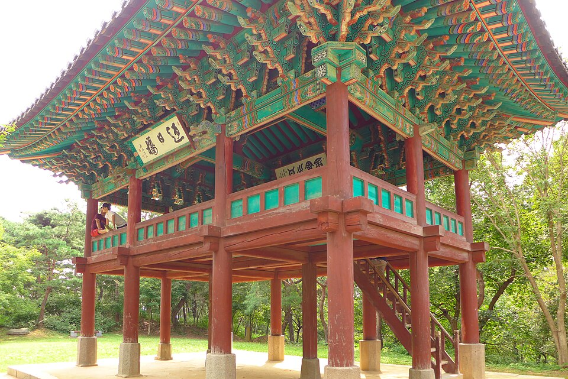
사비를 지키던 마지막 산성, 부소산성
부여에서 100년 넘게 꽃피운 백제. 하지만 마지막 왕 의자왕 때 큰 위기가 찾아왔어요.
동남쪽의 신라가 거대한 중국의 당나라와 손을 잡고, 신라군 5만 + 당군 13만, 모두 18만 대군이 밀려온 거예요.
신라(오른쪽)와 당나라(바다 건너)가 양쪽에서 백제를 공격했어요.
의자왕 때 백제는 신라의 성을 여러 개 빼앗았어요. 신라는 위기를 넘기려고 당나라와 동맹을 맺었고, 당나라는 고구려를 치기 전에 백제를 먼저 무너뜨리려 했답니다.
🏇 5천 결사대, 황산벌로 가다
나라가 위기에 처하자 백제의 영웅 계백 장군이 나섰어요. 군사 5,000명만 이끌고 황산벌(논산)로 향했죠. 목숨을 걸고 싸우겠다는 군대를 결사대라고 불러요.
사비 한복판의 정림사지 탑. 전쟁 후 당나라 장군이 탑에 글을 새기기도 했어요.
"우리는 백제를 위해 한 발짝도 물러서지 않는다!" 계백과 결사대는 신라군 5만을 상대로 네 번이나 크게 이겼어요. 신라의 어린 화랑 관창이 두 번이나 뛰어들었다가 목숨을 잃은 뒤, 신라군은 이를 악물고 총공격을 퍼부었죠.
📺 깨비키즈 역사대모험 11화 - 황산벌 전투 (▶ 누르면 재생)
🌸 마지막 이야기, 그리고 기억
적군은 너무 많았어요. 결국 결사대는 황산벌에서 모두 쓰러지고, 사비성도 함락되었답니다. 의자왕은 웅진성으로 피했다가 나당 연합군에 항복했어요. 660년, 700년 가까이 이어진 백제가 막을 내렸죠.
부여 백마강 절벽 낙화암. 궁녀들이 꽃처럼 떨어졌다는 전설이 내려와요.
부소산성 아래 백마강 절벽에는 이런 전설이 있어요. 나라가 무너지자 궁궐의 여인들이 적에게 잡히지 않으려고 절벽에서 강으로 뛰어들었다는 이야기. 그래서 이름을 낙화암(떨어지는 꽃 바위)이라고 부른답니다.
백마강이 굽이치는 낙화암 풍경
비록 전쟁에서는 졌지만, 나라를 지키려 한 계백과 결사대의 마음은 1,500년이 지난 오늘도 우리 가슴에 남아 있어요. 부여와 공주에서 그 흔적을 직접 찾아보세요!
👑 제4막: 백제의 왕
백제를 다스린 임금님을 백성들은 어라하 또는 건길지라고 불렀어요. 초대 온조왕부터 마지막 의자왕까지, 모두 31명의 왕이 약 700년 동안 나라를 이끌었답니다.
왕이 바뀔 때마다 백제의 수도도 한성 → 웅진 → 사비로 옮겨 갔어요.
아래에 있는 왕들은 부여·공주 탐방에서 꼭 만나게 되는 영웅들이에요. 이름과 업적을 미리 외워 두면 미션이 훨씬 쉬워진답니다!
🌱 온조왕 — 나라를 세운 왕
온조왕은 백제의 초대 왕이에요. 고구려에서 남쪽으로 내려온 온조는 한강이 보이는 땅에 성을 쌓고 “백성 백(百) 명과 함께 건넌 나라이니 백제(百濟)!”라고 이름 지었다고 해요.
온조왕이 처음 도읍한 위례성으로 여겨지는 풍납토성
한성 백제의 또 다른 성, 몽촌토성 (올림픽공원)
📺 백제를 세운 온조왕 이야기 (▶ 누르면 재생)
🎵 온조왕 노래 듣고 따라 불러 보기 (▶ 누르면 재생)
⚔️ 근초고왕 — 가장 넓은 백제
근초고왕 때 백제는 ‘황금의 나라’가 되었어요. 남쪽으로는 마한을 아우르고, 북쪽으로는 고구려의 평양성까지 쳐들어갔답니다. 바다 건너 일본에는 일곱 가지 칼 칠지도를 선물했죠.
근초고왕 시대의 외교 선물로 전해지는 칠지도

서울 송파의 백제 고분. 근초고왕 무덤은 석촌동 3호분으로 추정돼요.
📺 백제를 가장 넓게 만든 근초고왕 (▶ 누르면 재생)
근초고왕 이름은 ‘가까운 초고왕’이라는 뜻이에요. 앞선 초고왕을 이어 나라를 다시 크게 만든 왕이라 그렇게 불렀답니다.
🌟 무령왕 — 다시 강한 나라
한성이 무너진 뒤, 무령왕이 백제를 구해 냈어요. 제방을 쌓아 홍수를 막고, 굶주린 백성에게 농사를 가르쳤죠. 521년에는 중국에 “백제가 다시 강국이 되었다”고 자신 있게 알렸답니다.
도굴되지 않은 기적의 무덤, 공주 무령왕릉
불꽃 모양의 금제 관장식. 왕의 모자 위에 달던 황금 장식이에요.
📺 무령왕릉이 1,400년 만에 열린 날 (▶ 누르면 재생)
🏛️ 성왕 — 부여로 이사한 왕
무령왕의 아들 성왕은 산골 공주가 좁다고 생각했어요. “더 넓은 들판과 강이 있는 곳으로 가자!” 538년, 수도를 사비(부여)로 옮기고 나라 이름을 남부여라고 불렀답니다.
성왕이 꿈꾼 사비 궁궐을 재현한 백제문화단지
사비 도성 한가운데의 정림사지 5층 석탑
📺 수도를 부여로 옮긴 성왕 이야기 (▶ 누르면 재생)
성왕은 옛 땅 한강을 되찾으려다 관산성(옥천) 전투에서 목숨을 잃었어요. 그래도 그가 옮긴 부여는 100년 넘게 백제의 꽃으로 피었답니다.
🎵 무왕 — 서동과 미륵사
무왕의 어린 이름은 서동(마 캐는 아이)이에요. 전설에 따르면 신라 공주가 예쁘다는 소문을 듣고, 아이들에게 노래를 퍼뜨려 마음을 전했다고 해요. 그 노래가 바로 서동요랍니다.

백제 최대 사찰 미륵사의 모형. 탑이 세 개나 있었어요.

익산 미륵사지. 우리나라에서 가장 오래되고 큰 석탑이 있는 곳이에요.
📺 서동요와 미륵사의 무왕 이야기 (▶ 누르면 재생)
2009년 미륵사지 석탑 안에서 금으로 된 글이 나왔어요. 639년, 무왕의 왕후가 탑을 세웠다는 내용이랍니다. 전설과 진짜 역사를 비교해 보는 재미가 있어요.
🕯️ 의자왕 — 백제의 마지막 왕
무왕의 아들 의자왕은 처음엔 씩씩한 왕이었어요. 신라의 성을 40개나 빼앗고 대야성까지 함락시켰죠. 하지만 신라가 당나라와 손을 잡자, 18만 대군이 밀려왔어요.
왕이 정사를 보던 사비궁 (백제문화단지)
사비가 함락되던 날의 전설이 깃든 낙화암
📺 백제의 마지막 왕, 의자왕 이야기 (▶ 누르면 재생)
📺 의자왕 이야기 더 보기 (▶ 누르면 재생)
온조(시작) → 근초고(가장 넓음) → 무령(다시 강함) → 성왕(부여로 이사) → 무왕(미륵사·서동요) → 의자(마지막). 이 여섯 이름만 기억해도 탐험대원 합격이에요!
🌍 제5막: 백제와 다른 나라
백제는 혼자서 살지 않았어요. 북쪽에는 힘이 센 고구려, 동쪽에는 신라, 남동쪽에는 가야, 바다 건너에는 왜국(일본)이 있었답니다. 어떤 나라는 친척 같고, 어떤 나라는 라이벌, 어떤 나라는 가장 친한 친구였어요.
고구려(위)·백제(왼쪽)·신라(오른쪽)·가야(아래)가 한눈에 보여요.
나라를 이해할 때는 “누가 이겼나”만 보지 말고, “왜 손을 잡았나 / 왜 싸웠나”를 함께 생각해 보세요!
⚔️ 고구려 — 같은 뿌리, 큰 라이벌
백제를 세운 온조왕의 아버지는 고구려의 주몽이에요. 그래서 두 나라는 처음부터 깊은 사이였답니다. 그런데 한강을 두고 자주 싸웠어요.
고구려 고분 벽화. 말 타고 활 쏘는 모습이 힘세 보이지요.
백제가 가장 강했던 근초고왕 때는 고구려와의 싸움에서 이겼고, 반대로 고구려가 가장 강했던 장수왕 때는 백제가 한성을 잃고 남쪽으로 내려가야 했어요. 같은 뿌리인데도 한강을 두고 자주 다툰 ‘라이벌 친척’이었죠.
장수왕의 무덤으로 전해지는 장군총

각저총 벽화의 씨름 그림. 고구려 사람들도 씨름을 했대요!

광개토대왕의 업적을 새긴 커다란 돌, 광개토대왕릉비
나중에 신라가 커지자, 고구려와 백제는 “신라를 막자!”는 같은 목표가 생겨 다시 손을 잡았어요. 이 우정은 백제가 멸망할 때까지 이어졌답니다.
📺 고구려 고분 벽화 속으로 — 안악 3호분 이야기 (▶ 누르면 재생)
🤝 신라 — 친구였다, 원수가 되었다
신라와 백제는 때로는 가장 가까운 친구, 때로는 가장 무서운 적이었어요. 고구려가 남쪽으로 내려올 때 두 나라는 나제동맹을 맺고 함께 고구려에 맞섰어요.

신라의 수도 경주에 있는 첨성대

신라 왕이 쓰던 금관. 반짝이는 나무가 하늘로 솟아 있지요.

경주 대릉원. 잔디 언덕처럼 보이는 것들이 신라 왕과 귀족의 무덤이에요.

불국사의 멋진 돌탑, 다보탑

석굴암 안의 본존불. 신라 사람들이 돌로 만든 부처님이에요.
함께 한강까지 올라갔지만, 백제는 한강을 오래 지키지 못했어요. 백제 군대가 내려오자 신라가 그 땅을 차지했죠. 사이가 나빠지더니, 554년 관산성 전투에서 성왕이 목숨을 잃자 두 나라는 돌이킬 수 없는 원수가 되었답니다. 이 대립은 백제가 멸망할 때까지 이어졌어요.
📺 박물관이 된 도시, 신라의 수도 경주 (약 200초 · ▶ 누르면 재생)
📺 석굴암과 불국사 — 신라의 아름다운 절 (약 200초 · ▶ 누르면 재생)
고구려가 강할 때 → 신라와 친구! / 한강을 두고 다툰 뒤 → 원수! / 성왕이 전사한 뒤 → 끝까지 싸움.
🏺 가야 — 옆집의 작은 친구들
가야는 백제의 남동쪽에 있던 여러 작은 나라예요. 국경이 맞닿아 있어서 오래오래 오가며 물건을 나누었죠. 철과 토기를 잘 만들었고, 왜국과도 함께 교류했답니다.

가야 사람들이 만든 오리 모양 토기. 귀엽지 않나요?
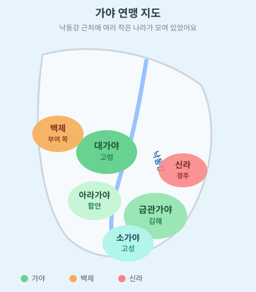
낙동강 근처의 가야 연맹. 금관가야(김해)·대가야(고령)·아라가야(함안)·소가야(고성)가 모여 있어요.

고령 지산동 고분군. 대가야 사람들의 언덕 무덤이에요. 지금은 세계유산이랍니다.

가야 사람들이 만든 철 등자(발걸이). 철을 아주 잘 다루었어요.
세 나라(백제·가야·왜)는 때때로 고구려와 신라에 함께 맞서기도 했어요. 다만 백제의 나라가 더 컸기 때문에, 큰형처럼 더 많은 영향을 주었답니다.
📺 가야의 무덤들이 세계유산이 된 이야기 (▶ 누르면 재생)
가야는 ‘하나의 큰 나라’가 아니라, 김해·고령·함안처럼 여러 친구가 모여 있는 연맹이었어요.
🌾 마한 — 백제의 처음 고향
백제는 처음부터 거대한 제국이 아니었어요. 처음엔 한강 남쪽 마한 연맹의 한 나라였답니다. 흙으로 만든 그릇을 보면, 백제 사람들은 멀리 부여·고구려보다 옆집 마한 친구들과 더 닮아 있었어요.

삼한 시기 사람들이 쓰던 알 모양 토기

삼한 사람들이 만든 새 모양 토기. 가야 오리 토기와 닮았지요?
충남 서산의 마애삼존불. 옛 마한 땅에 피어난 ‘백제의 미소’예요.
근초고왕 때 마한 전체에 백제의 이름이 퍼졌고, 무령왕 때에야 남쪽 땅을 더 튼튼히 다스리게 되었어요. 하지만 경기도·충북 일부는 고구려와 신라에게 내주어야 해서, “마한 전체를 우리 땅으로!”라는 꿈은 끝까지 다 이루지 못했답니다.
📺 마한의 땅을 튼튼히 다스린 무령왕의 무덤 이야기 (▶ 누르면 재생)
백제가 마한을 ‘그냥 정복’했다고만 생각하면 안 돼요. 같은 남쪽 가족에서 시작해, 천천히 큰형이 된 나라에 가깝답니다.
⛵ 왜국 — 바다 건너 가장 가까운 친구
백제와 왜국(야마토, 지금의 일본)의 사이는 아주 특별했어요. 백제는 배 타고 가서 건축, 철 다루기, 옷 짜기, 약, 음악처럼 생활에 필요한 기술을 많이 알려 주었답니다.
백제 왕이 왜왕에게 선물한 칠지도. 우정의 증표예요.
글과 생각도 전해 주었어요. 근초고왕은 왕인과 아직기를 보내 한자와 《논어》《천자문》을 가르쳤고, 무령왕은 유교를 가르치는 박사를, 성왕은 불교를 전하는 사신을 보냈죠.

일본 나라의 법륭사. 백제에서 건너간 건축·불교 문화의 영향을 받은 오래된 절이에요.

법륭사 꿈전(유메도노). 팔각형으로 생긴 아름다운 건물이에요.

백제관음의 모형. 일본 사람들이 ‘백제에서 온 부처님’이라고 부른 불상이에요.

일본 최초의 절 가운데 하나인 아스카데라. 백제 기술자들이 짓는 일을 도왔어요.
일본 기록에는 왕과 신하들이 백제옷을 입고 구경꾼들이 기뻐했다는 이야기도 나와요. 백제가 위기에 처하자 왜는 큰 군대를 보내 도우려고 했고, 나라를 잃은 백제 사람들 중 많은 이가 일본에 새 삶을 시작했답니다.
📺 백제의 유적과 동아시아 교류 이야기 (▶ 누르면 재생)
📺 무덤을 지키던 돌짐승, 진묘수 (▶ 누르면 재생)
백제는 왜의 ‘주인’도, 왜의 ‘하인’도 아니었어요. 서로 도우며 배운 가까운 친구였어요. 그래서 지금도 일본의 옛 절과 보물을 보면 백제의 솜씨가 떠오른답니다.
🌟 다섯 나라를 한 줄로!
🤝 신라 — 처음엔 친구, 한강·관산성 이후엔 원수
🏺 가야 — 옆집의 작은 친구들, 철과 토기의 나라
🌾 마한 — 백제가 태어난 남쪽 가족
⛵ 왜국 — 바다 건너, 글·불교·건축을 나눈 가장 가까운 친구
📝 부여 탐험 일지 (사비 백제)
🏛️ 관람 포인트 1: 국립부여박물관
박물관에 들어가면 백제 사람들이 쓰던 신기하고 아름다운 물건들이 가득해요. 그중에서 꼭 봐야 할 3가지 보물을 소개할게요!
① 진흙 속의 기적, 백제금동대향로
1993년 겨울, 주차장을 만들려고 땅을 파다 새카만 진흙 속에서 발견됐어요. 산소가 아예 통하지 않는 진흙이 이불처럼 덮어준 덕분에 1,500년 동안 하나도 녹슬지 않고 기적처럼 완벽하게 나타났어요!
꼭대기에는 하늘을 나는 불사조 '봉황'이 여의주를 품고 있고, 맨 아래에는 바다를 다스리는 힘센 '용'이 입을 쫙 벌린 채 역동적으로 향로 전체를 떠받치고 있어요. 그 사이에는 악기를 연주하는 5명의 꼬마 음악가들과 호랑이, 코끼리 등 39마리의 동물들이 숨바꼭질하듯 콕콕 박혀있어요.
② 연꽃이 피어난 벽돌 (전돌)
바닥이나 벽을 장식할 때 쓰던 흙으로 구운 벽돌이에요. 산과 구름무늬, 연꽃무늬, 심지어 도깨비 무늬까지 아주 정교하게 도장처럼 찍혀있어 백제 사람들의 솜씨를 엿볼 수 있어요.
③ 백제의 카카오톡, 나무편지 (목간)

나무판에 붓으로 글씨를 쓴 목간. 백제의 편지·메모장이에요.
종이가 비쌌던 옛날, 길쭉한 나무판자를 깎아 붓으로 글씨를 쓴 '목간'이에요. "쌀 좀 보내줘", "나 아파서 못 가" 같은 1,500년 전의 생생한 일상 이야기가 적혀있답니다.
🏰 관람 포인트 2: 백제문화단지
불타 없어졌던 사비궁을 현대의 대목장 할아버지들이 14년 동안 땀 흘려 완벽하게 다시 만들었어요. 못을 하나도 쓰지 않고 나무를 퍼즐처럼 끼워 맞췄대요!
① 가장 크고 화려한 궁궐, 사비궁
가장 큰 건물인 천정전 한가운데는 왕이 앉아 회의를 하던 화려한 '어좌'가 있어요. 임금님이 된 것처럼 거들먹거려 볼 수 있죠!
② 하늘을 찌르는 거대한 탑, 능사
무려 아파트 13층 높이(38m)로 거대한 나무를 깎아 차곡차곡 쌓아 올린 5층 목탑이 우뚝 서 있어요. 탑 아래서 소원도 빌어보세요.
③ 백제의 첫 도읍 위례성과 생활문화마을
.jpg?width=960)
백제 사람들이 살던 집을 다시 지은 생활문화마을
짚으로 엮은 초가집(움집)들이 옹기종기 모여있는 원시 시대 느낌의 위례성과, 귀족들과 평민들의 멋진 기와집들이 있는 생활문화마을에서 상황극을 즐겨보세요.
⛵ 관람 포인트 3: 백마강 황포돛배
누런 돛이 펄럭이는 황포돛배. 우리가 탈 배가 바로 이 모양이에요!
부여에서는 하얀 모터 유람선이 아니라, 노란 돛을 단 황포돛배를 타요. ‘황포’는 누런 베(천)라는 뜻! 광목을 황토물에 삶아 돛을 노랗게 물들인 배랍니다.
타는 곳은 구드래나루터예요. 사비 도성의 현관문이었던 큰 항구! 중국과 왜(일본)에서 온 배가 여기로 들어와 물건을 내리고, 사신들이 왕을 만나러 갔대요. 일본이 백제를 ‘구다라’라고 부른 것도 이 나루 이름과 닮았다는 이야기가 있어요.
구드래나루터 승선 → 백마강을 약 15분 → 강에서 낙화암 올려다보기 → 고란사 선착장 하선. 왕복이면 다시 배로 구드래에 돌아와요. 구명조끼를 꼭 입고, 손은 배 밖으로 내밀지 마세요!
① 백마강, 사비를 지키는 큰 강
부여를 감싸 안은 백마강(금강). 배가 다니기 좋아 사비의 길이었어요.
배가 떠 있는 강은 금강인데, 부여 구간만 특별히 백마강이라고 불러요. ‘말(馬)’을 ‘크다’는 뜻으로 쓰기도 해서, “백제에서 가장 큰 강”이라는 이름이에요. 산골 웅진(공주)에서 들판 사비(부여)로 이사 온 이유 중 하나도, 이 강으로 배가 멀리 나갈 수 있었기 때문이랍니다.
② 강 아래에서 올려다보는 낙화암
배 위에서 올려다보면 더 크게 보이는 낙화암 절벽
육지에서 걸어가면 절벽 위를 보지만, 배에서는 거꾸로 절벽을 올려다봐요. 이름이 낙화암(떨어지는 꽃 바위)인 까닭은, 사비가 위태로웠던 날 궁궐의 여인들이 꽃잎처럼 강으로 내려왔다는 전설 때문이에요. 산 능선을 따라 이어진 건 사비를 지키던 부소산성이에요.
③ 내려서 만나는 고란사

낙화암 아래 강가에 붙은 작은 절, 고란사
배에서 내리면 고란사가 나와요. 절 뒤 바위틈에서 나오는 고란약수는 “한 모금 마시면 몸이 가뿐해진다”는 이야기가 전해져요. 바위에 붙어 사는 풀 고란초도 찾아보세요. 배에서 강 쪽으로 눈을 돌리면, 백제 왕이 절을 하자 바위가 따뜻해졌다는 자온대 쪽 바위도 보여요.

강물·절벽·배가 한 장의 그림처럼 보여요.
① 노란 돛이 바람에 둥글게 부푸는 모양 ② 낙화암 큰 바위 절벽 ③ 부소산성 산능선 ④ 고란사 기와지붕 ⑤ (보이면) 자온대 바위
🏆 부여 탐험대 10대 미션
향로 맨 위 봉황의 턱밑을 자세히 쳐다보세요! 소원을 들어주는 이 구슬은? (초성: ㅇㅇㅈ)
향로 뚜껑에서 악기를 연주하는 5명의 아저씨가 모두 나오게 살짝 돌려가며 사진 찍어주세요!
박물관 설명판을 읽어보고 향로에 조각된 동물은 모두 몇 마리인지 적어보세요.
향로를 받치고 있는 용의 뿔이나 날카로운 발톱을 내 맘대로 더 무섭게 그려보세요!
박물관에서 향로 다음으로 내 마음에 쏙 드는 보물(그릇, 칼 등)을 찾아 사진 찍어 올려주세요!
[백제문화단지] 사비궁 천정전 안의 왕의 의자 '어좌' 앞에서 늠름한 자세로 인증샷 찰칵!
사비궁 지붕 꼭대기 양쪽 끝을 올려다보세요. 화재를 막아주는 장식 기와 이름은? (초성: ㅊㅁ)
능사 5층 목탑 지붕 모서리에 매달려 바람에 딸랑딸랑 소리 나는 종의 이름은? (초성: ㅍㄱ)
활쏘기(국궁) 체험장이나 생활문화마을에서 내가 씩씩하게 체험하는 모습을 사진으로 남기기!
황산벌에서 싸우던 장군의 갑옷에 나만의 멋진 황금색, 빨간색을 칠해 꾸며보세요!
[황포돛배] 우리가 타는 노란 돛 배의 이름은 무엇일까요? (초성: ㅎㅍㄷㅂ)
배 위에서 노란 돛과 낙화암 절벽이 같이 나오게 사진 찍어 주세요! 구명조끼도 꼭 입은 채로!
📝 공주 탐험 일지 (웅진 백제)
🏛️ 관람 포인트 1: 무령왕릉
1,500년 동안 도둑이 단 한 명도 들어오지 못해 옛날 보물이 그대로 발견된 기적의 무덤이에요!
① 1,500년 만에 깨어난 가디언, 진묘수
1971년 무덤 문을 열었을 때, 머리에 나뭇가지 같은 뿔이 달리고 입술엔 빨간 물감을 칠한 돌짐승이 무덤을 지키고 있었어요. 이 '진묘수' 덕분에 무덤 안의 보물들이 안전할 수 있었죠.
📺 무령왕릉을 지키던 진묘수 (▶ 누르면 재생)
② 연꽃무늬 벽돌과 불꽃 요정의 방
연꽃무늬 벽돌을 쌓아 만든 무덤 안. 아치처럼 둥글어요.
%20IMG%202234.jpg?width=960)
무덤을 지키던 상상 속 동물 그림(모형). 서쪽의 백호예요.
무덤 안쪽 방은 연꽃무늬가 찍힌 네모난 벽돌을 수천 개나 정성스럽게 쌓아 둥근 아치 모양으로 만들었어요. 벽 중간중간 호롱불을 켜두는 불꽃 모양의 구멍도 있답니다.
③ 왕과 왕비의 황금 관장식과 은팔찌
불꽃처럼 화려한 왕의 금제 관장식과 연꽃병 모양의 왕비 관장식이 발견되었어요. 또한 "다리가 은을 많이 넣어 만들었다"라고 이름과 날짜가 적힌 신기한 은팔찌도 나왔답니다.

왕비님의 은팔찌. 만든 사람과 날짜가 적혀 있어요.

칼 손잡이 끝에 용이 있는 환두대도
🏰 관람 포인트 2: 거대한 방패, 공산성
산봉우리 능선을 따라 무거운 돌을 짊어지고 구불구불 쌓은 성이에요. 바로 옆에 넓고 깊은 금강이 방어용 물길(해자) 역할을 톡톡히 했죠.
① 4방위를 지키는 수호신 깃발
성곽길을 걷다 보면 동서남북마다 청룡, 백호, 주작, 현무의 전설 동물 깃발이 펄럭이고 있어요. 진짜 백제 군사가 되어 순찰을 도는 기분을 느껴보세요.
② 강가에 찰랑이는 정자와 연못 (만하루 & 연지)

금강 옆 만하루 정자와 연꽃 연못(연지)
금강 쪽에 가면 '만하루'라는 멋진 정자와 커다란 돌을 층층이 쌓아 만든 아주 깊은 연못인 '연지'가 있어요. 성이 포위되었을 때 식수로 썼던 똑똑한 시설이에요.
③ 조선시대 얼음 창고 (석빙고)

한겨울 금강 얼음을 넣어 두던 석빙고. 옛날 냉장고예요!
정자 근처 동굴 같은 돌창고는 조선시대에 한겨울 금강 얼음을 보관하여 여름에 꺼내 먹던 냉장고 역할을 했답니다.
🏆 공주 탐험대 10대 미션
모형관에서 재현해 놓은 무덤 벽! 연꽃무늬가 새겨진 흙을 구워 만든 이것은? (초성: ㅂㄷ)
모형관 입구 무덤 수호신 '진묘수(석수)' 옆에서 똑같이 무서운 몬스터 표정 짓고 셀카 찍기!
왕비님이 베고 주무시던 '베개(두침)' 위에 그려진 새 두 마리를 나만의 색깔로 색칠해 주세요!
무령왕릉 칼 손잡이 끝에 조각된 번쩍이는 동물은 무엇일까요? 환두( ? )도
모형관 밖 진짜 왕릉들이 둥글게 솟아있는 송산리 고분군 언덕을 등 뒤로 씩씩하게 브이(V) 포즈!
서쪽 문인 '금서루' 천장에 알록달록 화려하게 그려져 있는 동물의 이름은 무엇일까요?
성곽길 깃발 중 내가 가장 좋아하는 색깔의 깃발(청,백,적,흑)을 하나 골라 깃발 아래서 찰칵!
남쪽을 지키는 붉은색 깃발에 그려진 상상 속 아름다운 불새 이름은? (초성: ㅈㅈ)
성곽을 오르다 금강이 멋지게 펼쳐져 보이는 곳(공북루 등)에서 가족과 꼭 껴안고 다정하게 찰칵!
공산성을 지키던 군사들의 방패에 적군이 도망갈 만큼 무섭고 강력한 나만의 그림을 그려보세요!
🏇 황산벌 돌파 미션
🏹 공산성 지키기
적이 성에 닿으면 친구가 먼저 도망갑니다!